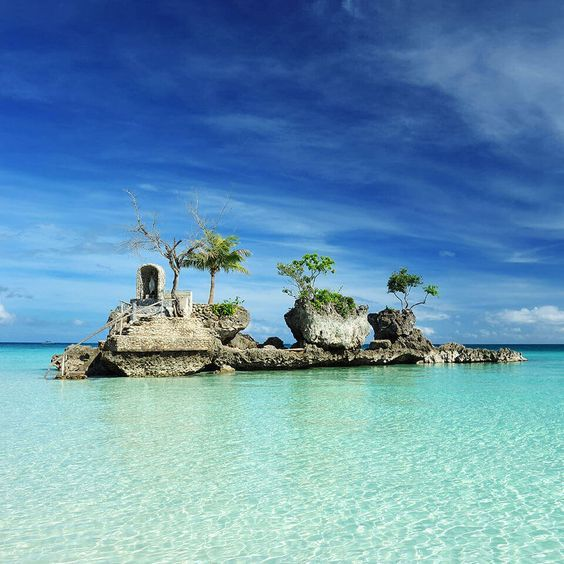
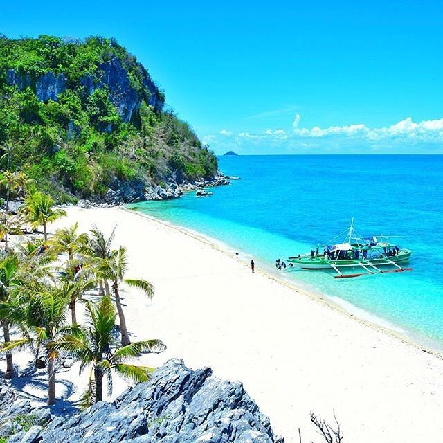
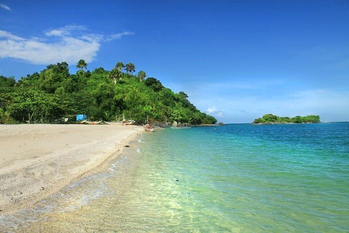
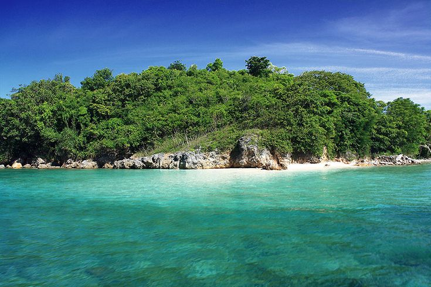

White Beach
Boracay, Aklan
Famous for its powdery white sand, clear waters, beautiful sunsets, and lively beachfront.
Explore DestinationExplore beautiful beaches, peaceful islands, and crystal-clear waters across Western Visayas. Find your next destination and experience the beauty of the Philippines.
From world-famous shores to quiet island escapes, discover four coastal destinations worth visiting.

Famous for its powdery white sand, clear waters, beautiful sunsets, and lively beachfront.
Explore Destination
Enjoy white sand, turquoise waters, and dramatic rock formations in this scenic island escape.
Explore Destination
Escape to a peaceful island with coastal scenery, clear waters, and a relaxing atmosphere.
Explore Destination
Relax by calm coastal waters and discover nearby islands through local island-hopping trips.
Explore Destination